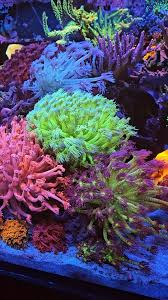

Gonipora Gonipora is one of the most sunning coral in the reefing hobby due to is large extending polyps and amazing colors. this coral can be hard to keep and thrives is extablished systems with regular feeding  image by Aquaculture